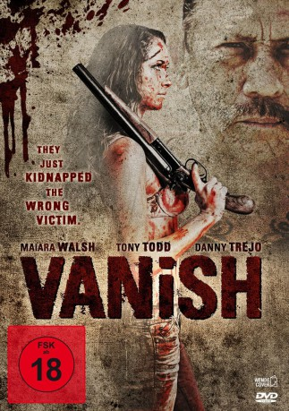

#9400 VANish
 gesehen am 30.08.2018
gesehen am 30.08.2018
 
 IMDB-Wertung: 5.2 / 10
IMDB-Wertung: 5.2 / 10  Tomatometer: 88
Tomatometer: 88  Metascore: 0
Metascore: 0 
In der Hoffnung ein saftiges Lösegeld zu erzielen, entführen Jack, Max und Shane die hübsche Emma, Tochter des mächtigen Drogenbosses Carlos Rodriguez. Was die drei nicht ahnen, ist, dass durch Emmas Adern das gleiche mörderische Blut fließt, wie bei ihrem skrupellosen Vater. Während die Zeit verrinnt und der Druck stetig steigt, sehen sich die drei Entführer immer größeren Gefahren ausgesetzt: Polizei, Auftragskiller und knallharte Gangsterbosse jagen sie unerbittlich. Gleichzeitig wachsen auch die Spannungen in der Gruppe, die sich schließlich in einer unvergleichlichen Gewaltorgie entladen.
Jahr: 2015
Dauer: 79 Minuten
FSK: 18
Land: USA Studio: Dark Sky FilmsTonspuren: DTS - ,
Untertitel:
Auflösung: 1080p (1920x808) Größe: 5191 MB
Genre: Action, Thriller, Horror, Krimi
Regisseur: Bryan Bockbrader
Drehbuch: Bryan Bockbrader
Soundtrack: Michael Tuller
Darsteller:
- Maiara Walsh als Emma
 Tony Todd als Officer Darrow
Tony Todd als Officer Darrow Danny Trejo als Carlos
Danny Trejo als Carlos- Bryan Bockbrader als Max
- Denise Dorado als Jasmine
- Hope Diaz als Isabella
- Angela Robitaille als Lexi
- Joe Davis als Ed
- Luis Deveze als Hitman #1
- Katherine Joan Taylor als Stroller Mom
 Lena Banks als Cell Phone Neighbor
Lena Banks als Cell Phone Neighbor- Austin Abke als Jack
- Adam Guthrie als Shane
- Michael Mendoza als Hitman #2
- Dan Brunker als Baseball Bat Neighbor
Datei: X:\FSK18-2015\VANish (2015, FSK18, 1920x808).mkv seit 30.08.2018
Festplatte: FSK18
 Es gibt insgesamt 23 Filme in der Gruppe 'FSK18-2015'
Es gibt insgesamt 23 Filme in der Gruppe 'FSK18-2015'